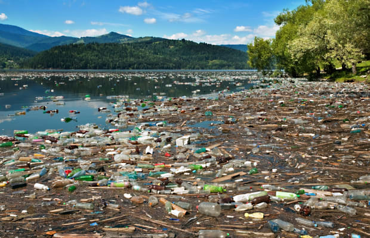
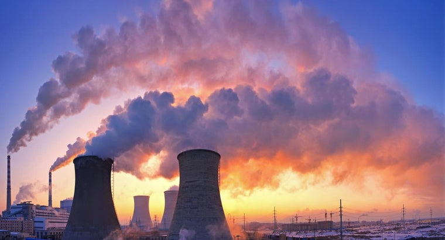

- 
- 
Climate Change
Today the worlds average temparature is 15 Celsius. This is an increase by about 1 degree over the last 50 years. It has been higer and lower throughout the past, but the recent rapid change in temperature is different from the past This is most likely due to humans releasing greenhouse gases into the atmosphere and increasing the efficiency of the greenhouse effect. This increase is likely to cause consequences to human and animal habitats in the future. One of the effects is a shrinking coastline. Increasing temperatures has led the the poles melting and releasing billions of liters of water into the ocean. This is only one of many consequences we face if we do not make a rapid change.
Ways we can reduce greenhouse gases